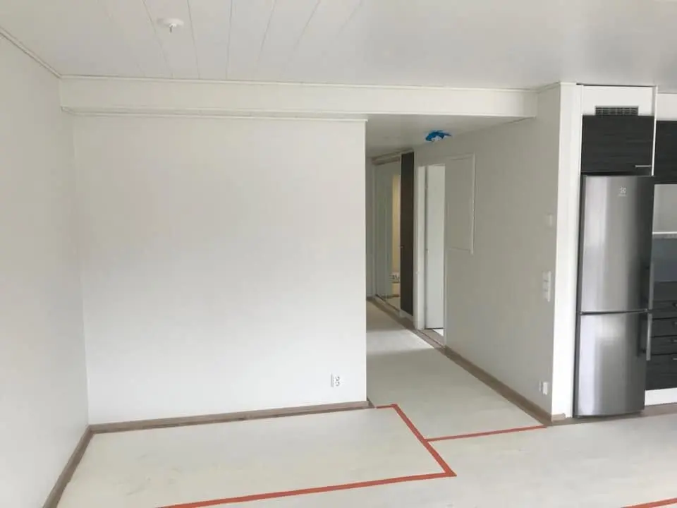
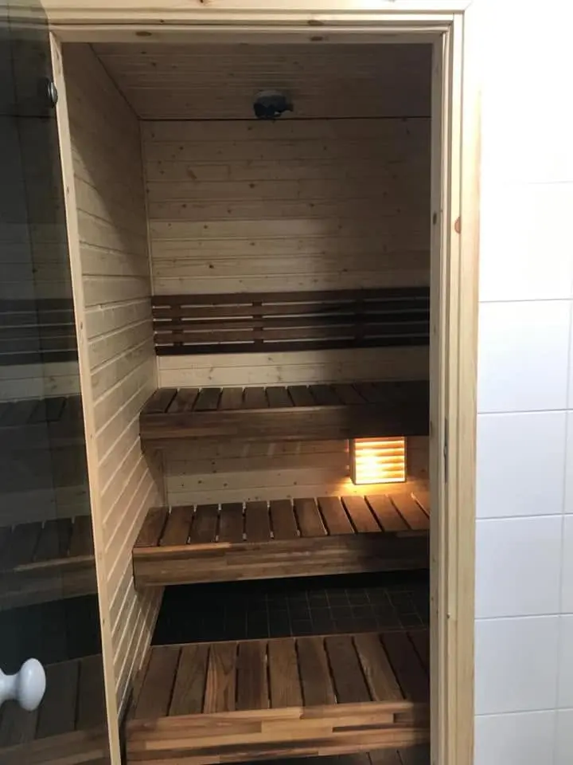
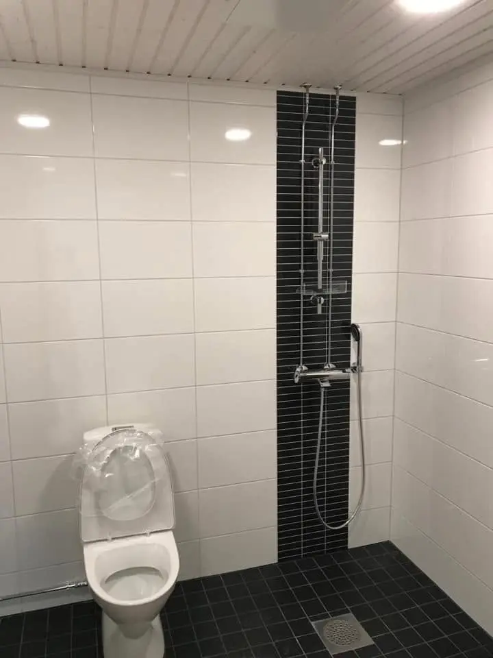
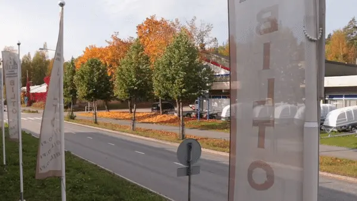

BILTO OY · VUODESTA 1998
Rakennamme
tulevaisuutta.
Uutta tilaa.
Uutta elämää vanhaan.
Uudis- ja korjausrakentamista Lohjalta käsin. Yksittäisestä työvaiheesta valmiiseen kokonaisuuteen.
SUUNNITELMASTA TOTEUTUKSEEN
1998Perustettu
LohjaRakentamisen kotipaikka
Uutta & uudistettuaUudis- ja korjausrakentaminen
01 / PALVELUT
Oikea osaaminen.
Koko hankkeeseen.
Rakennushankkeet ovat erilaisia. Kokonaisuus sovitetaan kohteen tarpeisiin — perustuksista viimeistelyyn.
01Uudisrakentaminen
Maanrakennuksesta ja perustuksista runkoon, vesikattoon ja valmiiseen rakennukseen. Palvelut yksittäisiin työvaiheisiin tai sovittuun kokonaisuuteen.
Kerro uudiskohteestasi02Saneeraukset
Asuntojen, toimitilojen ja julkisten tilojen korjausrakentaminen. Uudistamme tiloja käyttötarpeen mukaan, märkätiloista laajempiin saneerauksiin.
Kerro korjaustarpeesta03Hankkeen kokonaisuus
Suunnittelu, kustannusarvio, toteutus ja työnjohto sovitun urakan mukaan. Määritellään yhdessä, mitä hanke tarvitsee ja mistä Bilto vastaa.
Keskustellaan kokonaisuudesta02 / TYÖN JÄLKI
Yksityiskohdilla
on merkitystä.
Tilat, pinnat ja ratkaisut kertovat työstä. Näkymiä Bilton omasta kuva-aineistosta.

Lämpöä ja viimeisteltyjä pintoja

Arjessa toimivat ratkaisut
03 / REFERENSSIT
Tuttuja kohteita.
Monipuolista osaamista.
Poimintoja Bilton nykyisellä verkkosivustolla esitellyistä referenssikohteista.
Kisakallion
Kauppakeskus
Kamppi
REDI
Kalasatama
Musiikkitalo
Tapiolan
liikekeskus
Pasilan
Postikeskus
Esikatselussa esitetään kohteiden nimet. Bilton tarkka urakkasisältö ja hyväksytyt kohdekuvat lisätään ennen varsinaista julkaisua.

04 / BILTO OY
Pitkä historia.
Katse eteenpäin.
Rakentamisen kumppani
vuodesta 1998.
Bilto Oy toteuttaa uudis- ja korjausrakentamista oman osaamisensa ja yhteistyökumppaneidensa avulla. Jokaisen hankkeen takana on ihmisiä, jotka vievät suunnitelmat työmaalle ja työn valmiiksi.
Tutustutaan hankkeeseesi05 / OTA YHTEYTTÄ
Mitä olet
rakentamassa?
Kerro kohteesta, työn tarpeesta ja toivotusta aikataulusta. Niistä alkaa yhteinen suunnitelma.
Tämä on lomakkeen esikatselu.
Tietoja ei lähetetä eikä tallenneta. Vastaanottaja ja tietosuojakäytäntö sovitaan ennen käyttöönottoa.